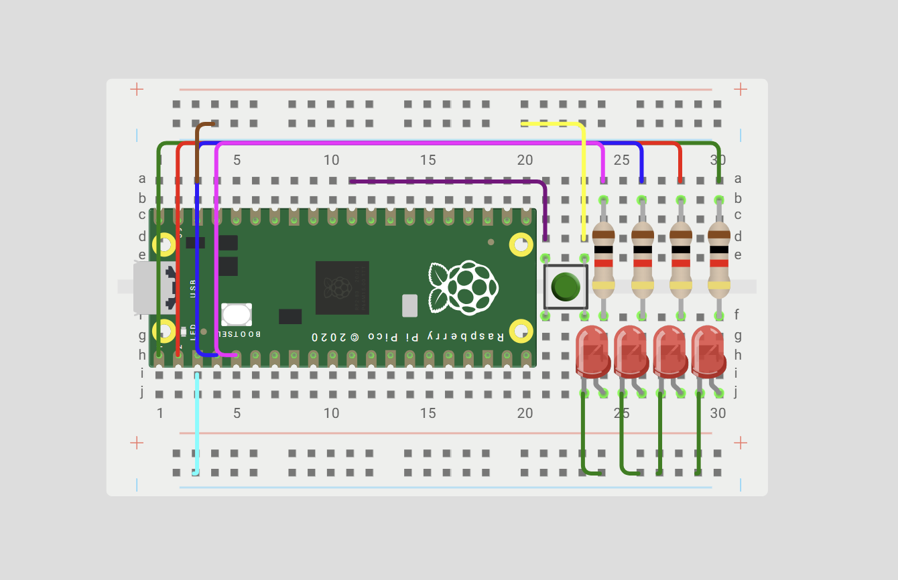

Block 1 - GPIO
Goal: to understand and control GPIO peripherals through memory-mapped registers, bitwise operations, masks, and RP2350 SIO registers.
What I Learned
In this practice, I learned how to control the GPIO pins of the RP2W and how each register affects their behavior. I also learned how binary numbers and masks can be used to control specific pins, and how the << operation moves bits to create the value needed. Finally, I understood better how the Pico SDK functions work and how they are connected to the SIO registers.
Circuit assembly for the exercises

Exercise 1 — 4 bit binary counter
Use the four LEDs as a 4-bit binary number.
The program must count: 1 → 2 → 3 → ... → 15 → 0
What I did
At the beginning, Gio and I were a little confused about the theory behind the exercise, so we asked ChatGPT for an example code to help us understand it. The code worked, but it was quite different from what our teacher later explained in class. After going over the concepts again, especially binary numbers and masks, we were able to write our own code.
Code gived by Chatgpt:
while (true) {
// Apagar todos los LEDs
sio_hw->gpio_clr = MASK;
// Encender los LEDs según el número binario
sio_hw->gpio_set = number;
// Esperar
sleep_ms(500);
// Siguiente número
number++;
// Regresar a 0 después de 15
if (number > 15) {
number = 0;
}
Code made by ourselfs:
sio_hw->gpio_set = (counter);
sleep_ms(200);
sio_hw->gpio_clr = (0b1111<<0);
sleep_ms(200);
counter++;
Video
Exercise 2 — Bouncing light
Create a light that moves across the four LEDs and then returns.
What I did
For this exercise, we went over the theory again and understood better how to move the bits between the four LEDs. With this, we were able to create the code ourselves.
Code:
while (true)
{for(pos=0;pos<=3;pos++)
{ sio_hw->gpio_set = (1u<<pos);
sleep_ms(200);
sio_hw->gpio_clr = (1u<<pos);
sleep_ms(200);
}
for(pos=3;pos>=0;pos--)
{ sio_hw->gpio_set = (1u<<pos);
sleep_ms(200);
sio_hw->gpio_clr = (1u<<pos);
sleep_ms(200);
}
}
Video
Exercise 3 — Fill and empty animation
Create an animation that progressively fills all four LEDs and then progressively empties them.
What I did
For this exercise, we reviewed the theory again and understood how the masks could be used to control each LED. Instead of using a counter like in the previous exercises, we decided to turn each LED on and off individually using binary values. This made the sequence easier for us to understand and follow.
Code:
sio_hw->gpio_set = 0b0001;
sleep_ms(200);
sio_hw->gpio_set = 0b0010;
sleep_ms(200);
sio_hw->gpio_set = 0b0100;
sleep_ms(200);
sio_hw->gpio_set = 0b1000;
sleep_ms(200);
sio_hw->gpio_clr = 0b1000;
sleep_ms(200);
sio_hw->gpio_clr = 0b0100;
sleep_ms(200);
sio_hw->gpio_clr = 0b0010;
sleep_ms(200);
sio_hw->gpio_clr = 0b0001;
sleep_ms(200);
Video
Exercise 4 — Fill from the outside inward
Create an animation that progressively fills all four LEDs and then progressively empties them.
What I did
For this exercise, we used what we had learned about binary masks to control more than one LED at the same time. We first turned on the two LEDs on the outside using 1001, and then the two LEDs in the middle using 0110. After that, we turned them off in the same order.
Code:
while (true) {
sio_hw->gpio_set = 0b1001;
sleep_ms(200);
sio_hw->gpio_set = 0b0110;
sleep_ms(200);
sio_hw->gpio_clr = 0b1001;
sleep_ms(200);
sio_hw->gpio_clr = 0b0110;
sleep_ms(200); }
Video
What could have gone better
Even though all of our codes worked correctly, I think we could have paid more attention to the theory from the beginning. We also could have experimented more with the circuit and the program to better understand how everything works. This would have helped us feel more confident with the code instead of mainly focusing on getting the expected result.
Conclusion
Overall, this practice helped us understand better how the GPIO pins and LEDs can be controlled using binary values and masks. At first, we were a little confused about the theory, but after reviewing it and practicing with different codes, we were able to create the four animations successfully. It also helped us see how small changes in the code can create different patterns and made us more comfortable working with the RP2350.